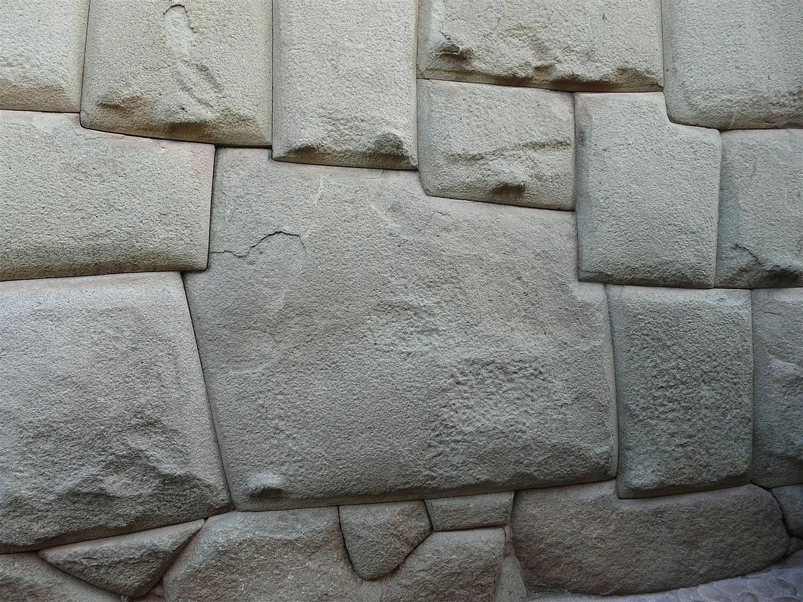
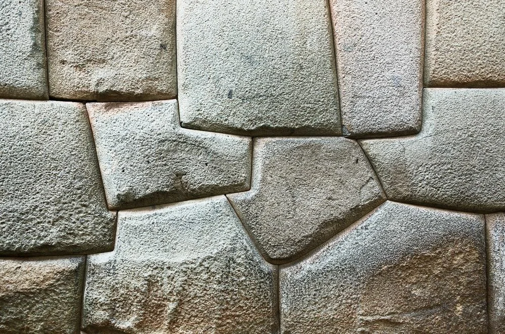
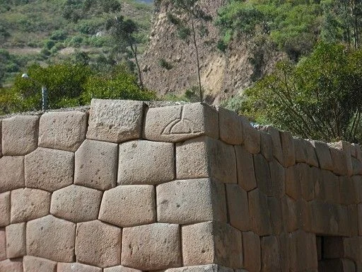
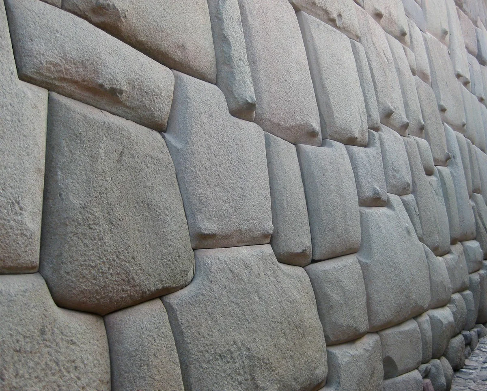
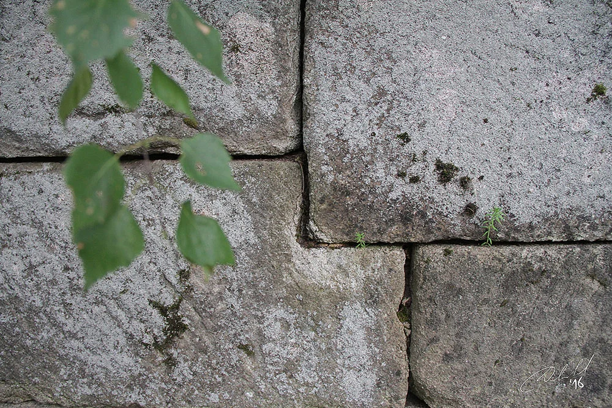

Остатки старинных построек, стены которых выложены по принципу полигональной кладки, есть на разных континентах. Самые впечатляющие из них находятся в Перу. Поэтому данную загадку древних строителей связывают в первую очередь с цивилизацией инков.
Создателям этих построек удалось подогнать друг к другу камни разнообразных неправильных форм так, что между ними отсутствуют щели: туда не просунешь даже иглу. Идеальное сопряжение. И это не стандартные прямоугольные блоки, а прочные камни с разнообразными криволинейными поверхностями!
Внушительные по размерам сооружения выстроены без всякого скрепляющего раствора. Простояли они тысячи лет в сейсмоопасных районах планеты и не разрушились от землетрясений и прочих агрессивных внешних воздействий. Из металлов инки знали только медь, а медные инструменты слишком мягки для обработки горных пород.
Очевидно, что технология инкской полигональной кладки ещё сложнее, чем методы строителей египетских пирамид.
Как всегда в подобных случаях, есть желающие объяснить появление этих невероятных построек участием пришельцев из космоса. Что полигональная кладка – это дело их рук, каких-нибудь нанороботов.
Вторая версия базируется на предположении, что цивилизация древних инков была не такой уж примитивной и отсталой, какой мы её представляем и какой её застали испанские завоеватели. Либо она была отголоском ещё более древней, неизвестной науке цивилизации, обладавшей такими технологиями, которые нам и представить трудно.
Самая элементарная версия основана на том, что уже давно и хорошо известны огромные карьеры, в которых древние инки вырубали каменные блоки, а также пути, по которым эти монолиты транспортировались на стройплощадки.
Предполагается, что всё было до скучного примитивно: блоки каждого нижнего ряда подгоняли под следующие – верхние, подбирая подходящие камни методом проб и ошибок. И никакой тщательной подгонки изначально не было: просто за прошедшие века камни слежались друг с другом так плотно под собственной тяжестью.
В пользу данной версии говорит такой эксперимент. Из гипса отлили точные уменьшенные ЗD-копии камней в полигональной кладке одной из стен инков. А потом собрали их, как конструктор. Точной подгонки при этом не получилось: щели между камнями были.
Но есть и явный минус: уж очень разнообразны и несимметричны камни, и собирать из них исполинские «пазлы», подбирая практически идеально совпадающие друг с другом, было бы невероятно долгим, сложным и трудоёмким занятием. А тем более – вытесывать их медными инструментами, подгоняя один блок к другому.
Существует гипотеза, основанная на том, что Анды – сейсмически активный регион. А в древности были ещё и вулканически активным. В этом регионе найдено немало скальных выходов «заглаженных» неведомыми силами. Они похожи на лаву, которая была вытолкнута на поверхность из недр земли, а потом окаменела. Подобно растекшемуся и застывшему бетонному раствору.
Застывали эти каменные выходы флюидолитов не сразу, а постепенно. Что, если древние строители пользовались этой, ещё не застывшей и пластичной массой? Они соскребали геобетон, как «каменный пластилин», формировали из него асимметричные блоки и строили стены.
В пользу этой версии говорит то, что каменные монолиты в полигональной кладке имеют немного выпуклую форму, словно они действительно были изначально как пластилиновые, а потом, под собственной тяжестью их слегка раздуло как бочонки. Кое-где можно даже найти следы опалубки, которая фиксировала стены в вертикальном положении. Например, след от столба, вдавленного в кладку, когда камни ещё были пластичными. Или неправильной формы блоки, нижняя часть которых свисает так, будто она потекла. Видимо, древние мастера рано сняли опалубку, а потом, увидев, что стена ещё «не схватилась», попытались исправить ситуацию, толкая «поплывшие» каменные массы вверх.
Кстати, в селе Чусовое Свердловской области тоже есть стена-пристань, которая сложена по принципу полигональной кладки, распространённой у древних инков и совершенно нетипичной для России.